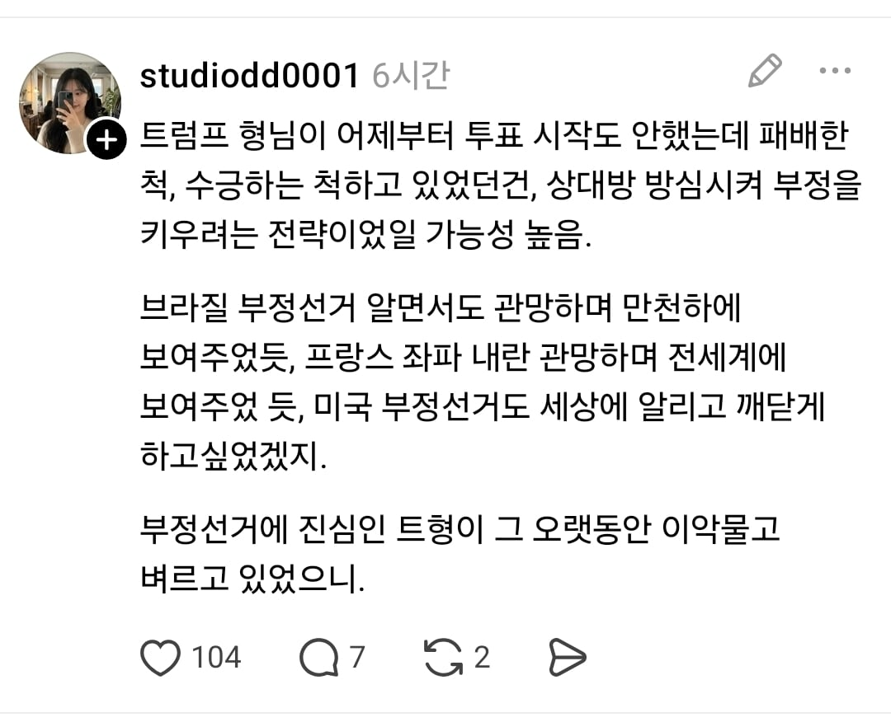
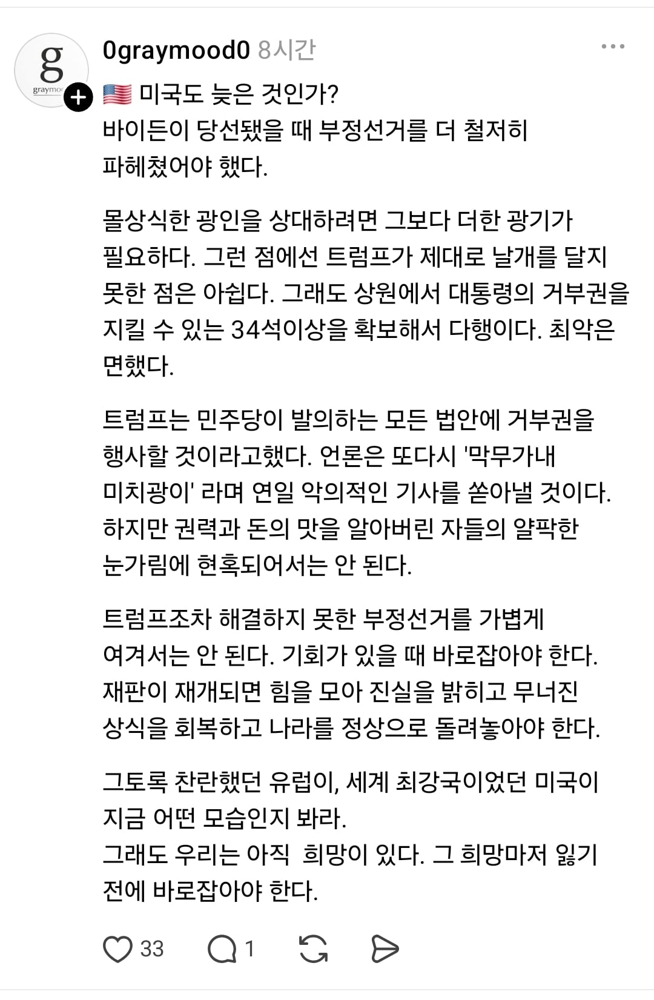
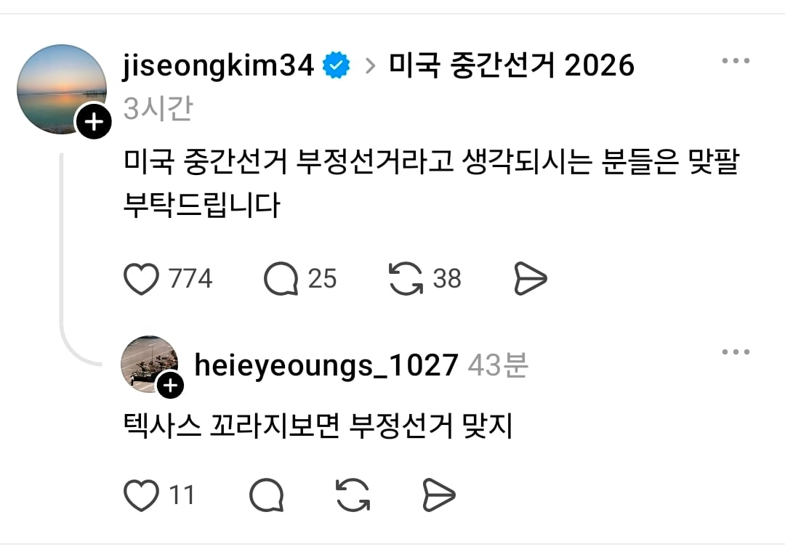
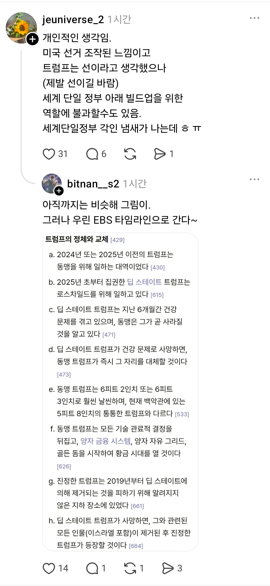
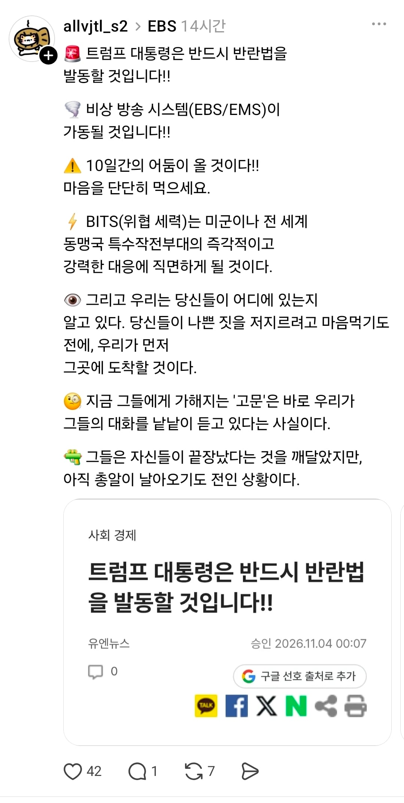

부정선거를 넘어 음모론도 ㅋㅋㅋ


얘네들은 무슨 병에 걸린걸까?



부정선거를 넘어 음모론도 ㅋㅋㅋ


얘네들은 무슨 병에 걸린걸까?
극우는 돈이 되니까 저러는거지 ㅋㅋ
분명 공화당과 민주당의 표가 비슷한채로 지게된다면 부정선거 음모론이 나올꺼라는 뉴스는 봤는데 이런보법은 신박하네
왜 원문으로 보기 버튼이 없는거냐
트씨발련은 한국을 그저 돈통으로 밖에 안보고 삥만 존나게 뜯는데 저새끼들은 그렇게 쳐맞고도 왜 트럼프 빨고있음..?
극우 음모론 탈출은 지능순임 ㄹㅇ
모든 개독이 마가야로는 아니지만 마가야로는 다 개독이더라